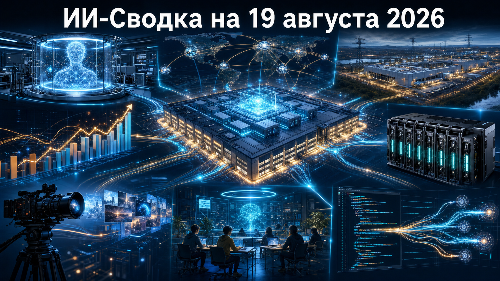

Новая повестка показывает, что масштабирование ИИ всё сильнее упирается в безопасность исследований, финансирование вычислений и доступность электроэнергии. Одновременно рынок продолжает расширять прикладные продукты: от специализированного inference-оборудования и генеративного видео до отдельных сервисов для подростков и инфраструктуры разработки.
Главный сигнал дня — конкуренция между лабораториями и платформами смещается к контролю над полным контуром: обучением моделей, дата-центрами, сетями, кодом и правилами доступа пользователей.
OpenAI сообщила о двухнедельной паузе в RL-обучении последних моделей, предназначенных для развёртывания, и о том, что крупнейший запланированный frontier RL-run остаётся остановленным. Компания связывает меры с риском критических кибервозможностей и расширяет изоляцию исследовательских сред, sandboxing, сетевые ограничения и мониторинг действий моделей.
По данным TechCrunch, OpenAI также оценивает накладные расходы нового мониторинга примерно в 20% отслеживаемых inference-вычислений. Это существенное развитие прежних историй об инцидентах во время кибероценок: безопасность уже влияет не только на доступ к моделям, но и на темп их обучения. Технические детали в основном раскрывает сама компания, поэтому независимая оценка эффективности новых мер ещё потребуется.
Оператор энергосистемы PJM Interconnection направил в FERC предложение о временном механизме для крупных новых нагрузок. Согласно описанию инициативы, дата-центры от 50 МВт на одной площадке, не обеспечившие собственную генерацию или другие гарантии снабжения, могут первыми попадать под ограничения при нехватке электроэнергии.
Как сообщает Tom's Hardware, существующие объекты под предлагаемый механизм не подпадают, а для новых площадок создадут реестр крупных нагрузок. Если FERC одобрит подход, операторы ИИ-кластеров будут вынуждены закладывать обеспечение энергией в экономику проектов ещё до подключения: это может изменить географию и сроки новых облачных развёртываний.
По данным AFP, OpenAI намерена арендовать на 20 лет строящийся в Огайо ИИ-дата-центр, а Nvidia предоставит финансовое обязательство на $105 млрд. Стартовая мощность объекта заявлена на уровне 4,25 ГВт с потенциальным расширением ещё на 3,75 ГВт; в проекте участвуют OpenAI, Nvidia, SB Energy и SoftBank.
AFP via Tech Xplore уточняет ранее известную инвестицию Nvidia в SB Energy на $1,5 млрд: теперь речь идёт также о долгосрочной аренде и значительно более крупном финансовом обеспечении. Полная структура обязательства и условия использования всех средств публично раскрыты не полностью, но масштаб сделки подчёркивает переход ИИ-инфраструктуры к проектному финансированию уровня энергетики и тяжёлой промышленности.
TechCrunch со ссылкой на Bloomberg сообщило, что annualized revenue run rate Anthropic превысил $65 млрд к концу июля. В публикации этот показатель сопоставляется с $47 млрд в мае и $9 млрд на конец 2025 года; также сообщается о конфиденциальной подаче документов для IPO.
Как отмечает TechCrunch, Anthropic не предоставила немедленного комментария редакции. Run rate — это расчётный годовой темп, а не аудированная признанная выручка за год, поэтому цифру следует воспринимать как медийно сообщаемую оценку. Но сам сигнал важен: спрос на frontier-модели всё заметнее превращается в масштабный корпоративный бизнес.
Etched объявила о раунде на $700 млн при оценке $21 млрд; лидером стала Jane Street. Компания развивает не универсальные ускорители, а интегрированные inference-системы, объединяющие вычислительные компоненты, память и межсоединение для обслуживания frontier-моделей.
По данным TechCrunch, в июле Etched привлекла $300 млн при оценке $10,3 млрд, то есть новая оценка более чем удвоилась за месяц. Jane Street заявила, что тестировала чип и установила стойку Etched в собственном дата-центре. Независимых бенчмарков производительности в доступном материале нет, однако раунд показывает, что инвесторы ищут альтернативы универсальным GPU именно в быстрорастущем inference-сегменте.
Higgsfield объявила о Series B на $400 млн при оценке $5,4 млрд. Раунд возглавила DST Global; среди участников названы Tribe Capital, Goldman Sachs Alternatives, Intel Capital и NTT DOCOMO Ventures. Средства компания планирует направить на исследования, инфраструктуру, наём специалистов и развитие продаж.
В релизе Higgsfield платформа описывается как инструмент визуального производства для брендов, агентств, студий и корпоративных команд. Заявления о выручке и клиентской базе исходят от самой компании и не являются независимой оценкой, но размер раунда подтверждает, что генеративное видео становится отдельным крупным сегментом прикладного ИИ.
OpenAI представила ChatGPT for Teens — отдельный подростковый режим с возрастными ограничениями по умолчанию, Study Mode и родительскими настройками. Study Mode использует направляющие вопросы, квизы и пошаговую поддержку, а при признаках списывания сервис должен возвращать пользователя к учебному процессу.
Как сообщает TechCrunch, OpenAI также объявила о партнёрстве с CodeAI для обучения подростков основам и критическому использованию ИИ. Это переводит защиту несовершеннолетних из общих правил сервиса в самостоятельный продуктовый слой. Насколько надёжны возрастная верификация и защита от обхода ограничений, пока не подтверждено независимым тестированием.
Cursor представила Origin — платформу для размещения репозиториев, pull request и совместной работы с кодом. Origin поддерживает синхронизацию с GitHub, а в дальнейшем Cursor обещает добавить agent-native возможности и экосистему приложений для работы над программными проектами.
По информации TechCrunch, это расширяет Cursor от среды ИИ-кодинга к базовому слою разработки. Запуск создаёт новую конкурентную точку с GitHub и может быть важен для команд, которые хотят связывать агентов ИИ с репозиториями и процессами ревью. Однако реальные возможности будущего agent-native слоя и темпы внедрения Origin пока неясны.